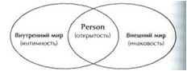

Наш «универсальный конфликт» связан с тем, что мы стремимся быть индивидуальностью, но индивидуальное существование требует от нас признания пугающей изоляции. Самый обычный способ совладания с этим конфликтом – через отрицание: мы детально разрабатываем иллюзию слияния и в результате провозглашаем: «Я не один, я часть других». Так мы размываем границы своего Эго и становимся частью другого индивида или группы, которая является чем-то большим, чем мы.
Индивидов, преимущественно ориентированных на слияние, обычно принято называть «зависимыми». Они живут, по формулировке Ариети, ради «доминантного другого» (и обычно чрезвычайно страдают в случае сепарации от доминантного другого). Они хоронят собственные потребности; пытаются узнать желания других и сделать эти желания своими собственными. Превыше всего они стремятся ничего не нарушить. Индивидуации они предпочитают безопасность и слитность. Кайзер дает особенно ясное описание таких индивидов:
«Их поведение словно сообщает: 'Не принимайте меня всерьез. Я не принадлежу к категории взрослых, и на меня нельзя рассчитывать, как на взрослого'. Они игривы, но не как тот, кто любит играть, а как тот, кто не хочет (или не смеет?) казаться серьезным и настоящим. Об огорчительных и даже трагических событиях говорится со смехом или торопливо и беспечно, как будто они не стоят того, чтобы тратить на них время. Есть также готовность говорить о собственных недостатках со склонностью к преувеличению. Достижения и успехи выставляются в смешном свете или за рассказом о них следует компенсаторное перечисление неудач. Речь этих людей часто может выглядеть рубленой из-за быстрого перескакивания с одной темы на другую. Позволяя себе необычную свободу выпаливать наивные вопросы или прибегать к детской манере говорить, они показывают, что хотят быть отнесенными к категории „не-взрослых“, и их не следует числить среди взрослых людей».
Слияние устраняет изоляцию радикальным образом устраняя самоосознание. Блаженные моменты слияния нерефлективны: ощущение "я" теряется. Индивид не может даже сказать: "Я потерял свое ощущение "я", потому что в слиянии нет сепаратного "я", которое могло бы это сказать. В романтической любви прекрасно то, что одинокое "я", о котором идет речь, растворяется в «мы». Как выразился Кент Бах: «Любовь – это ответ, когда нет вопроса». Утрата самосознания часто сопровождается успокоением. Кьеркегор говорил: «При любом повышении степени сознания и пропорционально этому повышению нарастает сила отчаяния: чем больше сознания, тем больше сила отчаяния».
Освободиться от сопряженного с переживанием изоляции ощущения собственного "я" можно также через слияние не с другим индивидуумом, а с «вещью» – группой, делом, страной, проектом. В слиянии с большой группой есть что-то очень притягательное. Кайзер впервые понял это во время ледового шоу, когда двое исполнителей, одинаково одетых, исполняли сложный номер на коньках совершенно в унисон. После аплодисментов они небрежно и равнодушно поправили галстуки и одновременно посмотрели на часы. Их синхронизация после аплодисментов еще сильнее взволновала зрителей, среди которых был Кайзер, который размышлял потом о радости размывания границ Эго:
"Единообразие движения и синхронизация движения, если они доведены почти до совершенства, привлекают, волнуют и зачаровывают зрителей, вне зависимости от того, нравятся или нет сами по себе движения, выполненные одним индивидом.
Один вымуштрованный солдат, демонстрирующий шаг, темп, повороты и остановки, может радовать глаз обучающего его офицера, в глазах постороннего наблюдателя он выглядит смешным. Если целый батальон движется по парадному плацу в ногу, разбивая большую колонну на меньшие группы, делая поворот точно в один и тот же момент, снова поворачиваясь, образуя одну длинную линию и сохраняя неразрывным фронт, маршируя и поворачивая, а затем по короткому сигналу застывает на месте, так что все руки и ноги, все каски, фляги и винтовки замирают в одном и том же положении и ни один штык по направлению не отклоняется от других, даже ревностный противник милитаризма не может удержаться и не быть захваченным этим спектаклем. И конечно, захватывает его не красота, не правильные углы, не прямые линии, но картина…или скорее идея многих, действующих так, как будто их воодушевил один разум".
Быть подобным любому другому – не отличаться в одежде, речи, обычаях, не иметь иных мыслей или чувств, чем у остальных, – это состояние спасает человека от изоляции, которую влечет самость. Конечно, "я" утрачено, но утрачен и страх одиночества. Враги конформности – разумеется, свобода и самоосознание. Решение проблемы изоляции путем конформизма-слияния подрывается вопросами: чего я хочу? что я чувствую? какова моя цель в жизни? что во мне нужно выразить и осуществить?
В вековой борьбе между самовыражением и безопасностью в слиянии компромисс, направленный на избегание изоляции, обычно достигается за счет "я". Притягательная сила группы воистину велика. Один из бесчисленного множества примеров трагедия в Джорджтауне, демонстрирующая силу группы. Отождествление с группой дало ее членам защиту от страха изолированного существования – вещь настолько ценную, что они пожелали пожертвовать ради нее всем: своими земными благами, своими семьями, друзьями, родиной и наконец своими жизнями.
Мистицизм, включающий в себя возвышенные, чудесные моменты единения со вселенной, также служит примером утраты Эго. Слияние с другим индивидом, с группой или делом, с природой или со вселенной, всегда включает в себя потерю "я": это договор с дьяволом, выливающийся в экзистенциальную вину – те самые вину и горе, которые оплакивают непрожитую жизнь в каждом из нас (И. Ялом «Экзистенциальная психотерапия»).
Слияние – механизм защиты, фиксированный у тех, кто не переносит различий, стараясь умерить неприятные переживания нового и чуждого. При этом нет разницы между Я и не-Я, различий между фигурой и фоном, нет возникающей фигуры собственной потребности. Одна из проблем слияния – ненадежность основы отношений. Два человека не могут думать и чувствовать одинаково. Слияние же – это своего рода игра, в которой скованные одной цепью партнеры заключили соглашение не спорить. Сам факт негласного договора может быть обнаружен постфактум, если один из участников нарушает установившиеся правила, а второй недоумевает, один негодует, а второй испытывает чувство вины. Но человек может пренебречь различиями ради важной цели. Такой шаг отличается от слияния, как прерывания контакта, поскольку сделан по собственному выбору.

Нарциссическое страдание — это «пустое одиночество», внутренняя глухота, пугающая потеря себя — потеря своего внутреннего Я . Это страдание представляет собой сильную боль , которая, однако, в течение длительного времени может не ощущаться ввиду включения копинговых реакций. Она проявляется в полной мере, когда к отсутствию внутреннего добавляется утрата нарциссом возможностей идентифицировать себя с внешними объектами, находя в них свое отражение. В принципе, это состояние невыносимо и невероятно болезненно: быть в такой степени от самого себя отторгнутым, в такой степени себя не знать, быть вынужденным застыть в таком сильном отчуждении от самого ближнего – самого себя. Это ужасно: внутренне оставаться без ответа в отношении всего пережитого, ничего не слыша по этому поводу от своего «внутреннего партнера»; быть настолько одиноким, оставаясь без какого-либо сопровождения, — без того, чтобы кто-то с тобой заговорил, без отклика из своей внутренней глубины.
Для того чтобы человек мог справиться с подобной утерей внутреннего, вынести эту невыразимую словами боль ненайденной индивидуальности, небытия как Person и постоянного духовного иссыхания; для того чтобы он мог выжить в этом внутреннем одиночестве, включается психодинамика , защищающая нарциссическую личность от возможных глубоких психологических травм. Она приводит к следующим типичным паттернам нарциссического реагирования:
Терапия в этом случае будет заключаться в работе с границами self, с личной «территорией» каждого человека, с временными пределами человеческих взаимодействий (чередование контактов и отступлений). Для этого необходима обстановка доверия и достаточной безопасности, которая позволит находящемуся в конфлюэнции клиенту стать независимым, не испытывая при этом опасений оказаться отвергнутым или «поглощенным».
Утверждению собственного своеобразия, непохожести на других способствуют некоторые классические гештальт-упражнения (телесные, вербальные или символические): определение границ своего тела, своего собственного ритма в группе, поиски своего особого места в ней, физическое противоборство с партнером и т. д.
Обличая конфлуэнцию, Перлз сочинил свою знаменитую молитву гештальтиста:
«Я иду моим путем, а ты идешь своим.
Я пришел в этот мир не за тем, чтобы соответствовать твоим ожиданиям, а ты — не за тем, чтобы соответствовать моим.
Ты — это ты, а я — это я...
И если мы случайно встретимся — это прекрасно!
А если нет, то этому нельзя помочь...»
1. Отметьте некоторые свои привычки – как вы одеваетесь, как чистите зубы, как открываете или закрываете дверь, как печете пирог. Если привычки не кажутся вполне эффективными или если изменения кажутся столь же хорошими, а кроме того, привносят разнообразие, попробуйте изменить их. Что произойдет? Получите ли вы удовольствие, учась делать что-то по-новому? Или вы встретитесь с сильными сопротивлениями? Не опрокинет ли изменение одной какой-нибудь частности всю схему вашего заведенного порядка? Что происходит, когда вы наблюдаете, как кто-то выполняет работу, похожую на вашу? Не раздражают ли вас отличия, хотя бы небольшие, от того, как делаете это вы сами?
Проснувшись, прежде чем встать, подумайте о возможности чувствовать или действовать иначе, не так, как обычно. Не принимайте решений, которые должны быть непременно выполнены, просто живо визуализируйте возможные простые и легко выполнимые изменения в вашем обычном распорядке.
Рассмотрите как можно больше своих «черт» – речь, одежду, поведение в целом и пр. – и задайте себе вопрос, в подражание кому вы их обрели. Друзьям? Врагам? Если вы одобряете в себе эту черту, чувствуете ли вы благодарность к ее источнику?
Понаблюдайте за своими реакциями на кинофильм или спектакль. Отметьте, насколько, обычно не замечая этого, вы отождествляетесь с действующими лицами. С какими именно? Не с теми ли, с кем, как вам кажется, трудно было бы отождествить себя?
Вспомните, по отношению к кому вы чувствуете вину или обиду. Вызвали ли бы подобные действия то же чувство, если бы они принадлежали кому-нибудь другому? Теперь вспомните свои отношения с этим человеком в целом. В какой степени вы принимаете как само собой разумеющееся то, что, может быть, этим человеком вовсе не принимается как само собой разумеющееся? Хотите ли вы изменить статус-кво? Тогда, вместо того чтобы мучить себя чувствами вины или обиды, поищите пути расширения области контакта!
Оставаться самим собой мне позволяют четыре реальных факта:
Мы обычно не осознаем до конца всей значимости своего тела. А ведь именно тело делает возможным наше бытие в этом мире и представляет собой связующее звено между миром и моим Я. Тело «несет» нас по жизни, в теле мы находим нашу опору и наше пристанище. Оно до известной степени составляет нас. И хотя мы представляем собой нечто большее, чем тело, для темы идентичности оно имеет очень большое значение: что бы ни изменялось вокруг, наше тело остается таким же . Среди суеты и толчеи жизни оно остается константой , которую я могу видеть и чувствовать. Тело всегда занимает свое пространство. И, что является самым важным для идентичности, я узнаю свое тело всегда как свое — в этом факте коренится мое бытие самим собой. Ни одно человеческое тело не идентично другому — так сильно моя индивидуальность связана с телом. Лицо, фигура, пальцы и их отпечатки, белые кровяные тельца — при всем постоянстве и сходстве человеческой анатомии и психологии нельзя не заметить индивидуальные различия на всех уровнях.
Мы ощущаем свою идентичность благодаря тому, что люди, вещи, события в окружающем мире как-то на нас воздействуют: мы переживаем их и благодаря этому чувствуем себя . Мы чувствуем себя, когда идем, плывем, бежим. Когда ребенок качается на качелях, он ощущает себя. Когда мы слушаем музыку, она звучит в нас и вызывает переживания, благодаря которым мы чувствуем самих себя. Потребности, влечения, настроения, чувства — мы всегда переживаем их в связи с нашим Я, даже когда они быстро сменяют друг друга. Чувствуя радость, я знаю, что это всегда моя радость. Я никогда не переживу твою радость, разве что она подействует на меня, и тогда я тоже смогу почувствовать радость, но только потому, что буду радоваться сам. Особенно ярко я могу переживать мое бытие собой, когда направляю внимание на чувствование собственного тела.
Благодаря некой силе во мне я «могу сказать "нет" » (Макс Шелер , 1991), если что-то, по моему мнению, не является правильным, и сказать «да» , если я с чем-то согласен. Это совершенно обычное дело, и мы едва сознаем, что в этом как раз и проявляется наша духовная сущность — наше персональное бытие. Когда я чувствую, что могу чему-то сказать «нет», чтобы в случае необходимости от этого отграничиться, или же когда я совершенно добровольно и непринужденно говорю чему-то «да» — тогда в моем Я есть столько силы, что я могу переживать себя как самодетерминирующуюся личность (Person, которая сама формирует себя). Персональное в человеке подобно зрачку, оно может быть открыто (доступно) в большей или меньшей степени, как шире или уже раскрыт зрачок в зависимости от освещенности. Так оно позволяет хорошо видеть и одновременно само себя защищает. Персональное в человеке регулирует «нет» и «да» — отграничение и открытость - как во вне, по отношению в миру, так и по отношению к тому, что происходит внутри, во мне самом.
В конечном итоге переживание бытия как моего собственного коренится в том, что я ощущаю себя «центром акта действия » (Макс Шелер , 1991), действующим и влияющим на что-то. Я являюсь автором воздействий, которые могу наблюдать. Камень, который я бросаю в озеро, вызывает расходящиеся кругами волны — это произошло благодаря мне. Если бы меня не было, не было бы и этих волн. Я могу осуществлять определенные воздействия на окружающий мир, и это утверждает меня в моем бытии самим собой.
Важно осознавать и чувствовать эти четыре источника идентичности, проживать их и заботиться о них. Если один из них и тем более несколько будут исключены или обойдены вниманием, если они будут проживаться в недостаточной степени, то произойдет потеря соотнесенности с Я, и я более не буду аутентичным.
Для этого нужны две предпосылки. Человек должен:
Необходимо было научиться всерьез воспринимать свои чувства. Появлялось же у нее ощущение, что столько работы для нее слишком много. Такого рода импульсы важно было научиться не просто распознавать, но прислушиваться к ним, воспринимать всерьез и бережно лелеять. Для этого необходимо уделять себе столько же времени, сколько и другим. Обращение к себе самому требует тишины и покоя. С другой стороны, для этого необходима позиция, чтобы было возможно «подойти к самому себе» и на некоторое время «остаться у себя». Оставаться у себя — что это значит? Обращать внимание на спонтанные ощущения, импульсы, просто на то, как мы сейчас себя чувствуем, что с нами делают вещи и обстоятельства, трогают ли, говорят ли нам что-то?
Занятие позиции является важнейшим шагом Персонального экзистенциального анализа, ему и начала учиться Герта. Когда она становилась слишком мягкотелой и чувствовала, что вновь приспосабливается к другим, то начинала спрашивать себя: «Хорошо ли это? Подходит ли это мне? Нахожу ли я сама правильным то, как я сейчас поступаю?» И она начинала чувствовать, что ей уже не нравится одеваться так, как она одевается, и что она, собственно, на самом деле со многим не согласна. Герта училась прислушиваться к своему внутреннему голосу, уделять ему все больше и больше внимания. И постепенно она наконец научилась говорить об этом другим.
Когда она оказывалась на другом полюсе — слишком высоко мнила о себе и была занята только собой, она делала то же самое — ненадолго подвергала себя сомнению: «Чувствую ли я, что это правильно — то, как я себя веду? Действительно ли мне это нужно, могу ли я за это отвечать, говорить этому "да"?» Она делала то, что очень важно для этого шага, — слегка отстранялась от своих спонтанных чувств и импульсов, которым на первом шаге научилась предоставлять место. Очень важно находить место для своих чувств, но не менее важно также уметь дистанцироваться от них, уметь взглянуть на них со стороны, проверяя: «Действительно ли они совпадают с реальной жизненной ситуацией? Соответствуют ли они мне, моей самой глубокой сущности?» Только так можно полностью почувствовать свое Я.
Итак, я лишь тогда становлюсь самим собой, когда я себя отпускаю, даю миру подействовать на меня, привести в движение мои чувства, а потом спрашиваю себя: «Как ты сам к этому относишься — согласен ли ты с этим, есть ли у тебя чувство, что это правильно? Соответствует ли это тебе?» (А. Лэнгле «Person. Экзистенциально-аналитическая теория личности»).